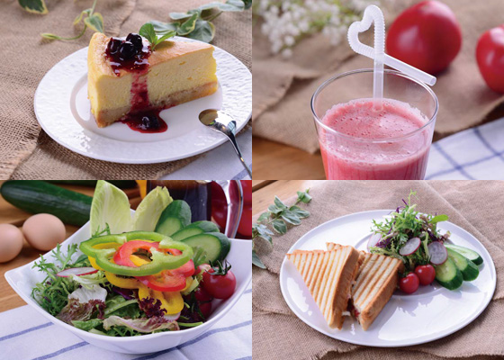

为了让上班族的你更快的补充能量，
更好的投入工作，
为了满足您对健康、营养、美味饮食的要求，我们特地推出有机、健康茶餐厅。
这里提供爱心早餐、浓香咖啡和茶，可口甜点，健康有机蔬果汁、美味有机色拉。
适合商务会谈，小型聚餐，休憩，进食，读书，思考。
贴心呵护上班的你。
有机茶餐厅，不来你就OUT啦！
Tony organics
生机饮食健康生活
不吃污染及过度加工的食物；提高生食有机蔬果的比例或喝有机蔬果汁及精力汤；符合健康原则及环保概念的生活方式。
-
不吃污染及过度加工的食物。重拾敬仰自然的价值观；选择本地当季有机食材，养成健康的生活 习惯，按时作息、坚持锻炼身体；拥有积极的生活态度，追求内心的丰富和宁静。
-

提高生食有机蔬菜的比例或喝有机蔬菜汁及精力汤，符合健康原则及环保概念的生活方式。
-
食材经过烹调，营养价值都会多多少少发生变化。没有哪种烹饪方法是“最好”的，不管是 生吃、蒸、煮、烤、煎、炸，或利用微波炉、压力锅等工具烹调，我们都可以通过掌握科学 方法来让营养损失降低、减少有害物质的产生。
-
每个人都希望得到幸福。但幸福的真谛不是对物质世界无止尽的追求，而是内心世界的丰富 和宁静。 如果吃有机食物，却常常过度消费、不知节俭，那么这样的生活方式对自然资源和 能源的消耗仍然是巨大的，最终会使土地、水和空气越来越不健康，适合有机农业的环境也 会一天天消失，我们要一点一滴做起，保护环境。
-
有机蔬果汁 多利吧的有机蔬菜汁中的原料蔬菜，来自多利农庄大团基地，24h内新鲜采摘，冷 链配送，保证新鲜和营养的最大 化。有机果汁中的水果都是官网在销售的进口水果，这些果子都 是搭乘飞机直送浦东机场的，跨越大江大洋的新 鲜营养的水果。 有机蔬菜果汁采用物理方式挤压 榨汁，最大限度的保留了蔬菜中的营养物质，维生素损失少；热量低，不用担心发胖；口味纯正， 口感妙不可言。
-
有机色拉 有机色拉里面的蔬菜都是来自多利农庄的有机蔬菜，前一天新鲜采摘，夜里冷链配送，保证 是24h之内新鲜的有机蔬菜，营养物质都没有损伤流失，正是最新鲜最营养的时刻。配上米其林大厨 孟晨孟总独家秘制色拉调料配方，真是集美味和营养与一体的绝妙佳品。